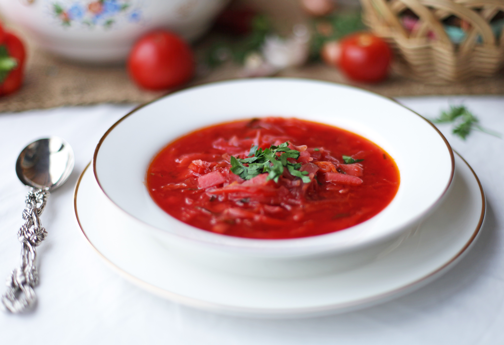
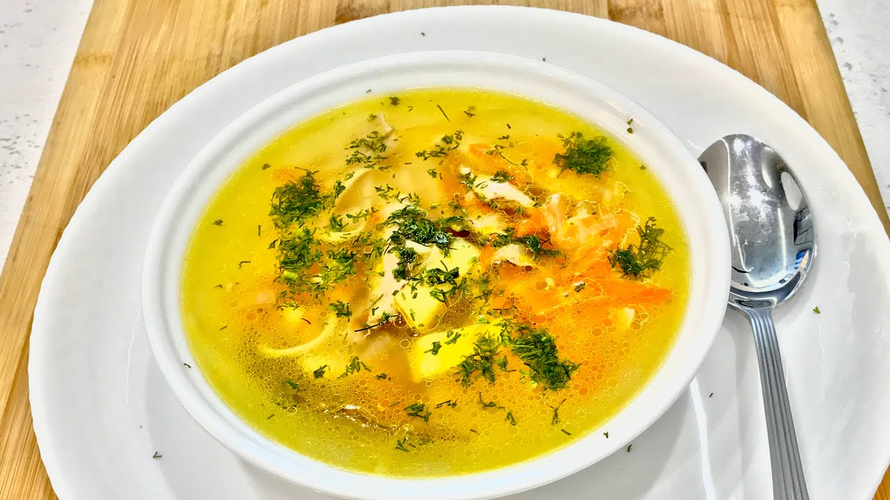
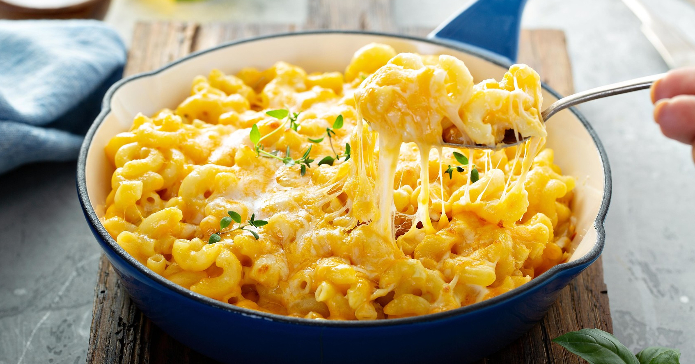
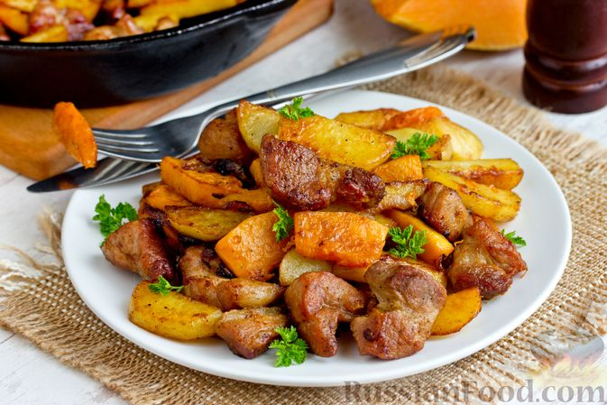
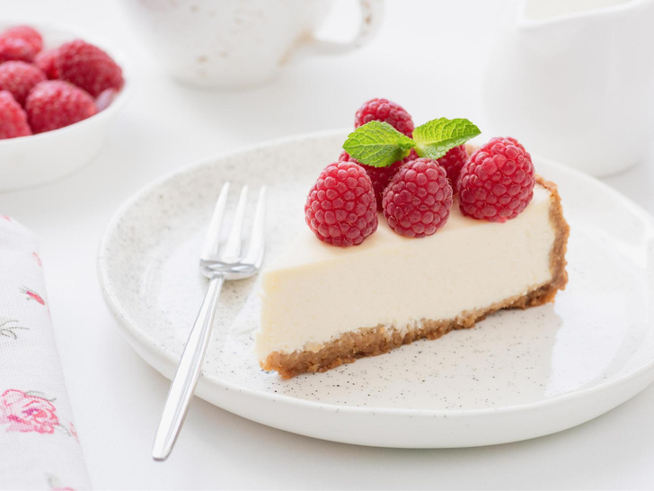
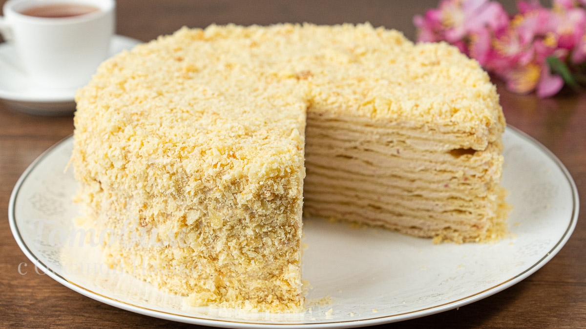
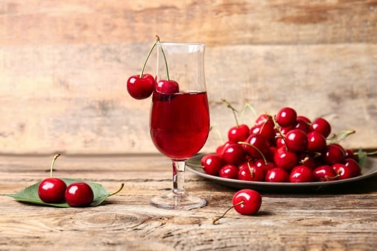
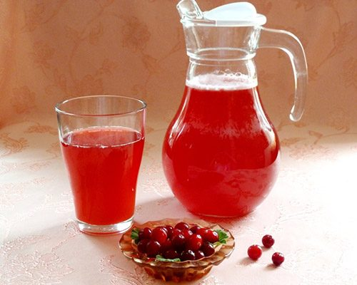

| Разделы: |
Общая информация |
Видео со столовой |
|
Меню:
|
Первые блюда:
|
Борщ.
(капуста белокочанная, свёкла, картофель, морковь, лук репчатый.)

|
Салма.
(курица, лук, морковь, мука, яйца, соль, перец.)

|
Вторые блюда:
|
Макороны с сыром.
(макароны, сыр чеддер, масло сливочное, мука, молоко, перец)

|
Картошка с мясом
(говядина, картофель, лук репчатый, чеснок, перец, лавровый лист)

|
Десерт:
|
Чизкейк.
(печенье, масло сливочное, сыр сливочный, сливки, пудра сахарная)

|
Наполеон.
(мука, маргарин, соль, молоко, яйца, сахар, масло сливочное)

|
Напитки:
|
Компот из смородины.
(смородина чёрная, смородина красная, сахар, вода)

|
Морс клюквенный.
(клюква, вода, сахар)

|